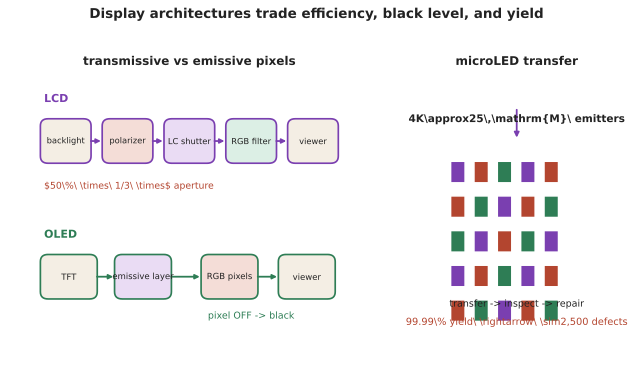

应用 II · 显示技术
层次：本科接触 + 巨大产业 ｜ 核对于 2026-07。 显示是光电技术面向消费者最直接的应用，也是一个技术迭代极快、且每一代都在解决上一代根本短板的领域。本页梳理主要技术路线的物理原理与各自的固有限制。

一、评价显示的物理量
先建立判据，否则无法比较技术路线：
| 指标 | 含义 | 决定于 |
|---|---|---|
| 亮度（nit, cd/m²） | 单位面积发光强度 | 发光效率与功率 |
| 对比度 | 最亮/最暗 | 黑电平是关键——漏光决定上限 |
| 色域 | 可表示的颜色范围 | 原色的光谱纯度（越窄越纯） |
| 分辨率/PPI | 像素密度 | 制程能力 |
| 响应时间 | 像素切换速度 | 材料机制 |
| 视角 | 亮度与色彩随角度的变化 | 光学结构 |
| 功耗与寿命 | — | 效率与材料退化 |
色域与光谱纯度的关系值得强调：原色越接近单色光，色域越大。这就是量子点与激光光源能提供极大色域的原因——它们的发射谱极窄。
二、LCD：调制而非发光
LCD 本身不发光，它调制背光。结构（承第五页）：
液晶分子在电场下改变取向 → 改变对偏振的旋转 → 与检偏器配合实现亮暗。
固有的效率损失链（这是 LCD 的根本短板）：
- 起偏器至少损失 50%（自然光的一半偏振被吸收）；
- 彩色滤光片再损失约 2/3（每个子像素只透过一种颜色）；
- 加上开口率损失。
- 最终背光的光只有百分之几到达观众眼中。
对比度问题：液晶无法完全阻断光 → 黑色发灰。 对策是分区背光（local dimming / mini-LED 背光）：把背光分成数百到数万个可独立调光的分区。分区越多黑电平越好，但会出现"光晕（halo）"——亮物体周围的暗区被一同点亮。这是 mini-LED 背光的固有折中。
优点：成熟、便宜、寿命长、亮度可做得很高、无烧屏。至今仍是出货量主力。
三、OLED：自发光
有机材料在电流下发光，每个像素独立发光。
优势直接来自"自发光"：
- 真正的黑（像素关闭即不发光）→ 对比度极高；
- 无需背光与偏振片（部分结构仍用圆偏振片抗环境光反射） → 可极薄、可柔性、可折叠；
- 响应极快（微秒级），无拖影。
固有问题：
- 蓝色 OLED 材料寿命明显短于红绿 → 长期使用后色偏与"烧屏"（静态元素残留）。这是 OLED 至今最核心的技术难题；
- 亮度与寿命权衡：提高亮度会加速退化；
- 大尺寸制造成本高（蒸镀掩模在大基板上的精度限制）。
发光机制的演进（效率提升的关键路线）：
- 荧光：只利用单重态激子 → 内量子效率上限约 25%；
- 磷光（PHOLED）：利用三重态 → 可接近 100%。但稳定的蓝色磷光材料长期未能商业化——这正是蓝色寿命问题的根源；
- TADF（热活化延迟荧光）：不用重金属即可利用三重态，是重要的研究方向。
四、microLED 与其他路线
microLED：把无机 LED（第八页）微缩到微米级做像素。
理论上集大成：无机材料寿命长、亮度极高、效率高、无烧屏、响应快。
产业化的核心难题是"巨量转移"：一块 4K 显示需要约 2500 万颗微米级 LED，必须以极高的良率与速度从外延片转移到基板上。
- 若单颗转移良率 99.99%，一块屏仍有约 2500 颗坏点 → 必须配合检测与修复；
- 加上微缩后效率下降（尺寸减小时侧壁非辐射复合占比上升）。
当前落地形态：大尺寸商用拼接屏、AR 微显示（尺寸小、颗数少、单价可承受）。消费级大规模普及仍受成本制约【核对于 2026-07】。
其他技术：
- QD-LCD（量子点背光）：用蓝光 LED 激发量子点产生纯净红绿 → 大幅扩展色域，是现有 LCD 的低成本升级；
- QD-OLED：蓝光 OLED + 量子点转换，兼顾自发光与色域；
- 电子纸（E-ink）：双稳态——显示静止画面不耗电，反射式护眼。原理是电泳颗粒迁移。适合阅读，刷新慢；
- 激光投影：激光光源色域极大、寿命长，需处理散斑（speckle）。
五、近眼显示：AR/VR 的特殊挑战
这是当前光学工程最活跃的方向之一，因为它的要求几乎互相矛盾：
- 极高 PPI（近眼放大，需数千 PPI 才不见像素）；
- 极高亮度（AR 需在户外与阳光竞争，波导效率极低，要求光引擎亮度达到极高量级）；
- 大视场 + 小体积 + 轻重量；
- 辐辏-调节冲突（VAC）：双眼汇聚距离与眼睛对焦距离不一致 → 视疲劳。这是生理层面的根本问题，光场显示与变焦显示是候选解法但都不成熟；
- 光学方案：
- 几何波导（阵列反射镜）：效率较高、量产难；
- 衍射波导（表面浮雕光栅或体全息）：轻薄、可量产，但效率极低（常低于 1%）且有彩虹伪影；
- 超表面波导（第十八页）是前沿方向。
AR 光学是"每一项指标都在互相打架"的典型——这也是它至今未出现公认成熟方案的原因。
六、要点
- 色域取决于原色的光谱纯度 → 量子点与激光色域大；
- LCD 的根本短板是效率链（偏振片 50% + 滤光片 2/3）与黑电平；分区背光改善对比但带来光晕；
- OLED 的优势全部来自自发光，短板是蓝色寿命与烧屏；磷光提升效率但稳定蓝磷光仍是难题；
- microLED 理论最优，卡在巨量转移与微缩效率下降；
- AR 近眼显示的各项要求互相冲突，衍射波导效率极低，VAC 是生理层面的根本问题。
下一页：光作为测量工具——光谱、传感与 LiDAR。这是光电技术中最"工程"的一面，也是自动驾驶与工业检测的核心。